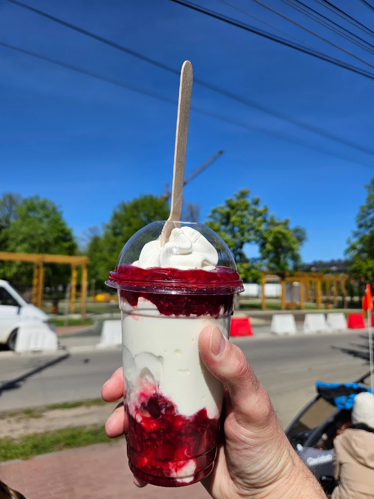
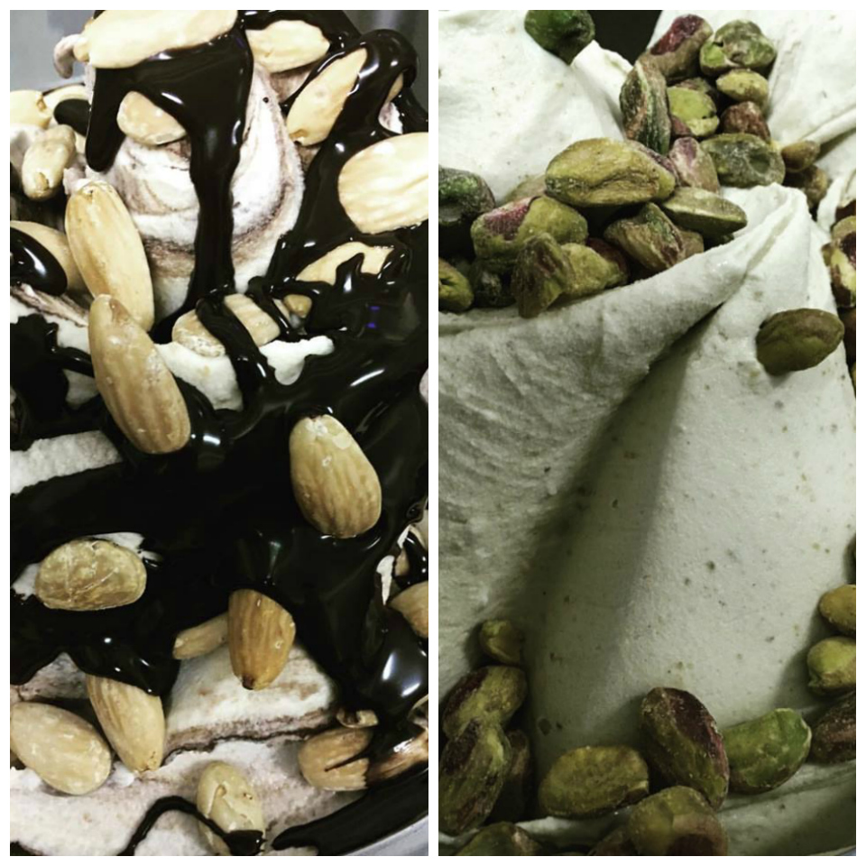

Lody, po które
wracasz. Codziennie.
Robimy je sami, małymi partiami, z prawdziwych składników. Osiem lokali w okolicy Warszawy, a w każdym inna tablica smaków każdego dnia.

Tablica smaków
Co dziś w gałce?
Nasze lokale
Wybierz najbliższy i sprawdź, co słychać
Kobyłka, Zielonka, Marki, Radzymin, dwa punkty w Wołominie i dwa w Warszawie. Każdy z mapą, godzinami i szybkim dojazdem.
O nas
Rzemiosło, nie masowa produkcja
Nasze lody powstają na miejscu, w małych partiach. Używamy mleka, śmietany, jajek, prawdziwych owoców, orzechów i czekolady. Nic na skróty.
Truskawki tylko w sezonie, sycylijska pistacja prażona u nas, karmel gotowany od podstaw. Ten sam smak, który pamiętasz z dzieciństwa, tylko zrobiony dziś rano.

Lody gałkowe
W wafelku lub kubeczku. Wafelek wypiekany i bezglutenowy.
Lody włoskie
Kremowe i śmietankowe, od małego po XXL, z polewą.
Desery
Deser Fantazja i inne kompozycje z bakaliami i bitą śmietaną.
Kawa z palarni
100% arabica, palona u nas. Na wynos i mrożona.
Kawa z własnej palarni
Zabierz nasz smak do domu
Palimy kawę w Kobyłce. Kupisz ją w lokalu albo zamówisz z odbiorem. 100% arabica z Kolumbii.
Opinie
Mówią za nas goście
Dobrze wiedzieć
Częste pytania
Kontakt i rezerwacje
Napisz do nas
Tort lodowy na urodziny, catering na event albo zwykłe pytanie. Odezwiemy się szybko.